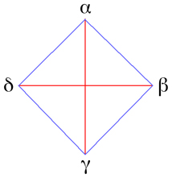

Quadra¶
A quadra is a group of four socionic types which have the same valued elements.
There are four quadra in the socion called Alpha Quadra, Beta Quadra, Gamma Quadra, and Delta Quadra. Each quadra is comprised of four types that values the same four information elements:
Quadra |
Valued Elements |
Types |
|---|---|---|
The intertype relations that exist between the four types of any quadra are identity, dual, activation, and mirror. These relations are generally considered to be favorable, with types sharing similar or compatible strivings, unspoken values, and expectations for interaction.
Quadra Descriptions¶
Attempts at accurate descriptions of quadras are notoriously difficult, as each quadra description must find some commonality among four types that are members of four different temperaments and two different clubs. Because the shared quadra values are abstract, quadra descriptions typically rely on presumed shared interests. All the typical problems of type diagnosis apply as well.
Wikisocion descriptions:
1st Alpha Quadra
2nd Beta Quadra
3rd Gamma Quadra
4th Delta Quadra
Additional articles and essays:
Quadra values¶
Warning
This page or section is incomplete. Additional contributions are needed.
The term quadra values is often used in socionics — for example, “LIIs have Ti as a quadra value.” What does this mean?
A possible explanation for quadra values is that the valued elements are either in the ego functions, which are conscious and strong, or the Super-Id functions, which are unconscious and weak. Because one naturally likes to have conscious control in the area of their strengths, the ego functions are valued. Similarly, because conscious engagement of one’s weaknesses is painful, the conscious Super-Ego functions are subdued, and the unconscious super-id functions valued. This is directly related to the idea of complementarity, which implies that duals allow the best possible environment for each other to develop their strengths, and at the same time, support their weaknesses in a healthy way.
Quadra values are best understood in terms of preference, and are unrelated to strength. For instance, a type with Se Se in their Ego will necessarily have Si Si in their Id and therefore be quite confident in both, but when there is a choice in priority, that type will tend to prefer to focus on Se Se over Si Si. A type of the same quadra, but without either function in the Ego, will likewise prefer Se Se over Si Si but not be particularly confident in either, so welcoming help from others on Se Se issues far more than over Si Si issues. Therefore both types have Se Se as quadra value.
Here is how each element manifests itself as a quadra value:
Valued extroverted intuition Ne¶
Types that value Ne prefer to prepare for future events rather than plan future events. This could mean being prepared to jump on a opportunity in a particular field. They reject the idea of predicting and manipulating the future, and prefer to just do what they enjoy (Si) or be active in a field of a lot of opportunities and capitalise on the opportunities as they come.
These types are also uncomfortable in dogmatic environments, groups and ways of thinking, believing dogma to be restrictive to thoughts and expressions or limiting in intellectual opportunities. They enjoy discussing unusual insights and their possible ramifications on the world, with disregard for the stereotypes set by their society.
These types also dislike the idea of ‘the mystic’ who claims to have mysterious and idiosyncratic knowledge without connecting his ideas to the external world. However, they admire and seek out ‘masters’ who have specialized skills or knowledge beyond that of the normal individual.
Valued introverted intuition Ni¶
Valued extroverted sensing Se¶
Valued introverted sensing Si¶
Types that value Si prefer to spend time enjoying activities that they do rather than straining themselves to achieve goals. They like to believe that if activities are done with enjoyment, people will give them more effort and time, and also becoming more skilled (Ne ) at what they are doing in the long run. They believe that goals should suit people’s intrinsic needs rather than being imposed simply because they “have to be done”.
For these types, money and material goods are temporary means to an end, and hardly worth showing off. Similarly, they see prestige and the like as a silly, artificial concept that just encourages the worst and most primal aspects of human nature.
They also try to be easygoing and pleasant, preferring peaceful coexistence to conflict, except in the most extreme cases. They highly value personal autonomy, and see shows of force and idle threats as immature and unnecessary in a civilized society. Things tend to be very low-pressure with these types.
Valued extroverted logic Te¶
Types that value Te tend to focus on worthwhile or beneficial activity (what is beneficial depends on the individual). They reject the idea that certain things can be analyzed on the principle that it is not beneficial or worthwhile to do so. An example of this would be use of socionics in business: although socionics does reflect how people act, actually using it beneficially in a business environment is difficult and overly complex, wasting effort and time on something that might not even make money.
They also do not like concepts or ideals (depending whether they are from Gamma or Delta) that are not practical or reflective of how the world works.
Valued introverted logic Ti¶
Types that value Ti naturally question the consistency of beliefs that are taken for granted in everyday life. They strongly prefer to make decisions based on their own experience and judgement, as opposed to relying on external authorities for knowledge, which they believe to be a last resort, a necessary evil. They also have little respect for people with ambiguous or wishy-washy opinions, believing that a sense of internal certainty is necessary for orienting oneself in life. To these types, not all beliefs are created equal, so neutral consideration of them is an inherently flawed proposition. Qualifications such as “it is claimed that” only serve to obscure the true importance and validity of a statement.
They see overly pragmatic views as shallow and obvious, and try to limit public discussion of mundane practical matters. They are especially sensitive to redundant information, often seeing it as insulting to one’s intelligence.
Valued extroverted ethics Fe¶
Types that value Fe like creating a visible atmosphere of camaraderie with other people. They enjoy a loose atmosphere where anything goes, where people don’t have to watch too carefully what they say for fear of offending others. This means these types try not to be too thin-skinned, always taking jokes with a grain of salt.
However, they are very conscious of the fact that the way something is said is very important to how it will be received, so they tend to add emphasis, embellishments, and exaggerations here and there to keep people engaged. The best way to say something is highly dependent on the situation and the implied purpose of the exchange, so of course levity is not appropriate in some situations; it is just one technique among many.
Even after explosive arguments, these types find it hard to hold grudges, and can tolerate people they (in principle) don’t like, as long as the situation is primarily social and doesn’t require too close contact. They prefer misgivings to be out in the open; they believe that the silent treatment is one of the worst things you can do to a person, and only aggravates the underlying problem.